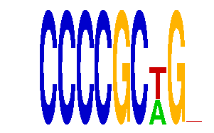

family_4 |
|---|
|  |
| Download PWM |
| Download instances (motifs) |
| Show motif distribution |
Query_ID | Query_Consensus | Subject_Name | Source_DB | Subject_ID | Length | Orientation | Offset | Divergence | Overlap | Subject_Consensus |
|---|---|---|---|---|---|---|---|---|---|---|
| family_4 | CCCCGCTGN | ZIC4 | HOCOMOCO | ZIC4_HUMAN.H10MO.D | 15 | reverse-complement | -4 | 0.545 | 9 | NCRCAGCGGGGGGTN |
Sequence | Start_position (from start) | Start_position (from end) | Average conservation | Best conservation score | Instance_with_best_CS | Best_Z-score | Instance_with_best_ZS | Strand |
|---|---|---|---|---|---|---|---|---|
| chr1:58346510-58347510 | 462 | 471 | 0.000111111 | 0.001 | CCCCGCWG. | 12.696979 | CCCCGCWGY | 1 |
| chr3:159445053-159446053 | 286 | 295 | 0.983333 | 1 | CCCCGCWG. | 14.126312 | CCCCGCWG. | -1 |
| chr9:25060245-25061245 | 442 | 451 | 0.0301111 | 0.044 | CCCCGCWG. | 12.696979 | CCCCGCWGY | 1 |
| chr8:13253380-13254380 | 712 | 721 | 0.0842222 | 0.094 | CCCCGCWG. | 14.126312 | CCCCGCWG. | 1 |
| chr14:63881391-63882391 | 594 | 603 | 0.00377778 | 0.015 | CCCCGCWG. | 12.696979 | CCCCGCWGY | 1 |
| chr7:149846298-149847298 | 488 | 497 | 0.000222222 | 0.001 | CCCCGCWG. | 12.696979 | CCCCGCWGY | 1 |
| chr9:120528540-120529540 | 175 | 184 | 0.620333 | 0.973 | CCCCGCWG. | 12.696979 | CCCCGCWGY | 1 |
| chr5:31873293-31874293 | 158 | 167 | 0.00133333 | 0.005 | CCCCGCWGY | 14.126312 | CCCCGCWG. | 1 |
| chr17:26721432-26722432 | 48 | 57 | 0.103778 | 0.21 | CCCCGCWG. | 12.696979 | CCCCGCWGY | -1 |
| chr10:116460642-116461642 | 369 | 378 | 0.314778 | 0.947 | CCCCGCWG. | 14.126312 | CCCCGCWG. | 1 |
| chr1:166249387-166250387 | 491 | 500 | 0.000555556 | 0.001 | CCCCGCWG. | 14.126312 | CCCCGCWG. | -1 |
| chr8:42100256-42101256 | 7 | 16 | 0.000333333 | 0.001 | CCCCGCWGY | 14.126312 | CCCCGCWG. | -1 |
| chr17:26987569-26988569 | 308 | 317 | 0.932333 | 1 | CCCCGCWG. | 12.696979 | CCCCGCWGY | 1 |
| chr10:96497996-96498996 | 328 | 337 | NA | NA | CCCCGCWGY | 14.126312 | CCCCGCWG. | 1 |
| chr2:84397126-84398126 | 541 | 550 | 0.00155556 | 0.005 | CCCCGCWGY | 14.126312 | CCCCGCWG. | 1 |
| chr4:55220837-55221837 | 957 | 966 | 0.983444 | 0.998 | CCCCGCWG. | 12.696979 | CCCCGCWGY | -1 |
| chr8:24498059-24499059 | 311 | 320 | 0.00266667 | 0.007 | CCCCGCWG. | 14.126312 | CCCCGCWG. | -1 |
| chr7:16897218-16898218 | 494 | 503 | 0.999556 | 1 | CCCCGCWG. | 14.126312 | CCCCGCWG. | 1 |
| chr11:11931217-11932217 | 383 | 392 | 0.00188889 | 0.003 | CCCCGCWG. | 14.126312 | CCCCGCWG. | 1 |
| chr11:82724646-82725646 | 528 | 537 | 0.550111 | 1 | CCCCGCWG. | 14.126312 | CCCCGCWG. | 1 |
| chr9:24572281-24573281 | 263 | 272 | 0.998 | 1 | CCCCGCWG. | 14.126312 | CCCCGCWG. | 1 |